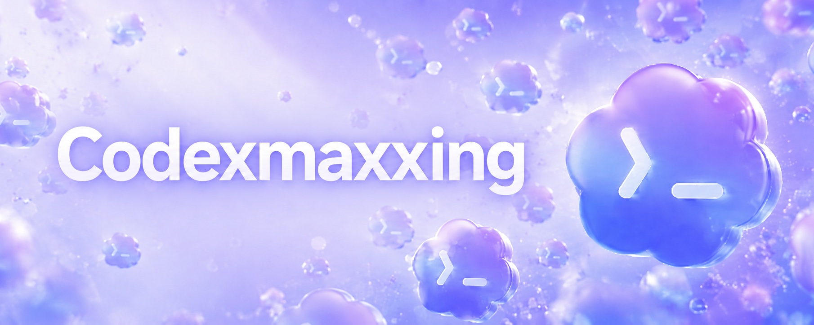

Codex workflows
Durable, tool-connected work streams with threads, steering, queuing, browser and desktop tools, automations, goals, side-panel review, and shared memory.
Durable Threads
Durable threads preserve context across repeated sessions. They work well for releases, documentation review, customer follow-up, monitoring, and chief-of-staff style coordination.

Steering and Queuing
| Control | Meaning | Example |
|---|---|---|
| Steering | Interrupt current work with new direction | Fix the API contract first. |
| Queuing | Add work after the current task completes | When tests pass, send the preview link. |
Steering changes now. Queuing changes next. Both keep the user close to long-running work without restarting the thread.
Tools and Surfaces
| Surface | Use |
|---|---|
| In-app browser | Inspect and annotate rendered artifacts |
| Signed-in browser context | Work that depends on user-authenticated state |
| Computer use | GUI-only workflows |
| MCP servers | Custom local tools and company systems |
| Connectors | Slack, Gmail, Calendar, and workflow origins |
| Skills | Reusable routines for repeated work |

Automations and Goals
Automations wake up work on a schedule. Goals add a finish line and a verifier.
| Goal | Verifier |
|---|---|
| Code migration | Unit tests pass |
| Bug fix | Reproduction fails before and passes after |
| Benchmark | Metric threshold reached |
| Report | Claims sourced and reviewed |
Shared Memory
Shared memory should be explicit and reviewable: decisions, blockers, owners, dates, links, and recurring preferences. Treat memory as a hint, not proof; verify against current state before acting.
This vault follows the same pattern: raw/ holds source material, wiki/ holds organized durable context, and wiki_html/ renders reviewable artifacts.